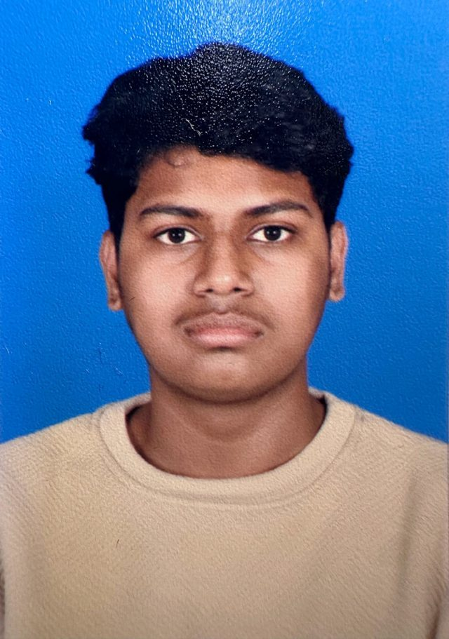

Commerce graduate from Kuwait, applying to study Business Administration in Saudi Arabia — with a growing interest in how technology is reshaping business.

I grew up in Kuwait, in a Bangladeshi household, studying a Commerce curriculum that pushed me toward business, economics, and information systems at the same time. That combination is exactly what draws me to Saudi Arabia right now.
The Kingdom's Vision 2030 push is turning entire sectors — finance, logistics, retail, technology — into places where a business graduate with real technical fluency has more to offer than one without it. I want to study somewhere that treats that combination as normal, not niche: a Business Administration program in a market that is actively building the industries I'd be studying, close enough to home that I can stay connected to the Gulf business environment I already know.
I'm not applying because it's convenient. I'm applying because the region I've grown up watching — its ports, its retail sector, its rapidly digitizing companies — is the same region I want to build a career in, and studying there means learning the market from inside it rather than from a textbook written for somewhere else.
Higher Secondary Education, Commerce Stream — CBSE Board
Integrated Indian School, Jleeb Al-Shuyoukh, Kuwait · Class of 2026 · Overall 80%
Led my school house through the academic year, coordinating and organizing a school event that drew strong attendance and was recognized by faculty.
Received a Certificate of Appreciation signed by the Ambassador, and have since been invited to further Embassy-linked community events.
The Informatics Practices grade above isn't a coincidence — I actually build things.
Completed a hands-on generative AI program run by Outskill, focused on applying AI tools to real, practical workflows rather than just reading about the theory behind them.
I'm currently designing and building a 4-player, first-person tactical shooter in Roblox — from the ground up, in Luau. It's a small, close-quarters arena game built around positioning and teamwork rather than speed, and it's still an early, evolving prototype. Working on it end-to-end — design, mechanics, and build — has been my main way of turning an interest in software into something real outside the classroom.